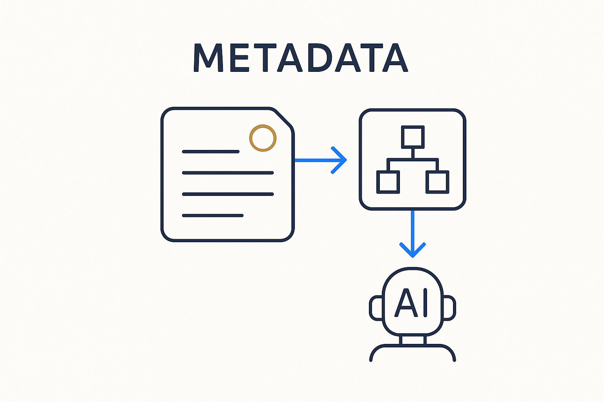

Metadata is the material Breakthrough Modeling is built from — structure, logic and meaning captured as data, so the platform and the AI can both read and run it.

> Metadata is the material Breakthrough Modeling is built from — structure, logic and meaning captured as data, so the platform and the AI can both read and run it.
Metadata is the whole game. Everything the approach depends on — the model, the mappings, the rules, the time policies, the lineage, the meaning — is metadata: structure and logic captured as data rather than buried in code or slides. Get the metadata right and the platform can be generated from it, the AI can read it, and the auditor can query it. Get it wrong or leave it implicit, and you are back to archaeology.
The shift is to stop treating metadata as documentation *about* the system and start treating it as the *substance* of the system. Descriptive metadata drifts because nothing breaks when it is wrong; the metadata that matters here is the kind that runs the platform, so it cannot lie. Structured, versioned and open — markdown, YAML, rules in git — it becomes the single source that SQL, tests, docs and answers are all generated from.
Metadata is the noun the whole family of concepts hangs off: executable metadata is the property that makes it run, the metadata star is the image of everything orbiting it, and metadata-as-code gives it an engineering lifecycle. Model it well and the leverage follows; ignore it and there is nothing for the tools to stand on.
Where it lives: the metadata OS — the material everything else is generated from.